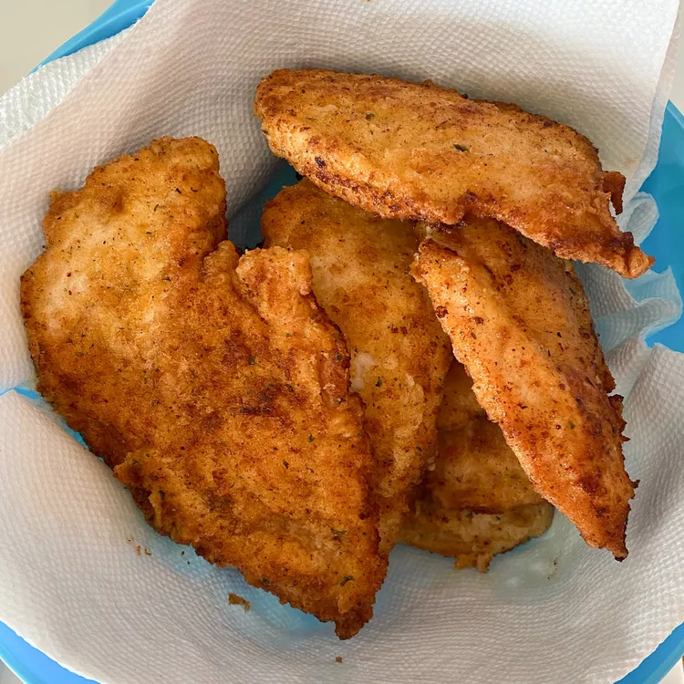

Garlic Chicken Fried Chicken
Home

Crispy Garlic Fried Chicken
This ultra-crispy fried chicken features a golden crust infused with aromatic garlic flavor, while staying juicy inside. Double-fried for extra crunch and brushed with garlic butter for maximum flavor.
The secret lies in the buttermilk marinade and the perfect blend of spices in the flour coating, creating the ultimate comfort food with a garlicky twist.
Ingredients
Chicken Marinade
- 3 lbs (1.4kg) chicken pieces (thighs, drumsticks, or wings)
- 2 cups buttermilk
- 6 garlic cloves, minced
- 1 tbsp hot sauce
- 1 tsp salt
- 1 tsp black pepper
- 1 tsp paprika
Flour Coating
- 2 cups all-purpose flour
- ½ cup cornstarch
- 2 tbsp garlic powder
- 1 tbsp onion powder
- 1 tbsp smoked paprika
- 2 tsp salt
- 1 tsp black pepper
- 1 tsp cayenne pepper (optional, for heat)
Garlic Butter Finish
- ½ cup unsalted butter, melted
- 4 garlic cloves, minced
- 1 tbsp chopped parsley
- ½ tsp salt
Steps
Marinating the Chicken
- In a large bowl, whisk together buttermilk, minced garlic, hot sauce, salt, pepper, and paprika.
- Add chicken pieces, ensuring all are fully submerged. Cover and refrigerate for 4-12 hours (overnight preferred).
Preparing the Coating
- In a shallow dish, combine flour, cornstarch, garlic powder, onion powder, paprika, salt, black pepper, and cayenne. Mix thoroughly.
- Remove chicken from marinade (shake off excess but don't wipe clean) and dredge in flour mixture, pressing firmly to adhere.
- Let coated chicken rest on a wire rack for 15 minutes while heating oil.
Frying Process
- Heat 3 inches of vegetable oil in a heavy pot to 325°F (165°C).
- Fry chicken in batches for 12-15 minutes until golden (internal temp 165°F). Drain on wire rack.
- Increase oil temp to 375°F (190°C) and fry again for 2-3 minutes per batch for extra crispiness.
Garlic Butter Finish
- Combine melted butter, minced garlic, parsley, and salt in a small bowl.
- Brush hot fried chicken generously with garlic butter mixture before serving.